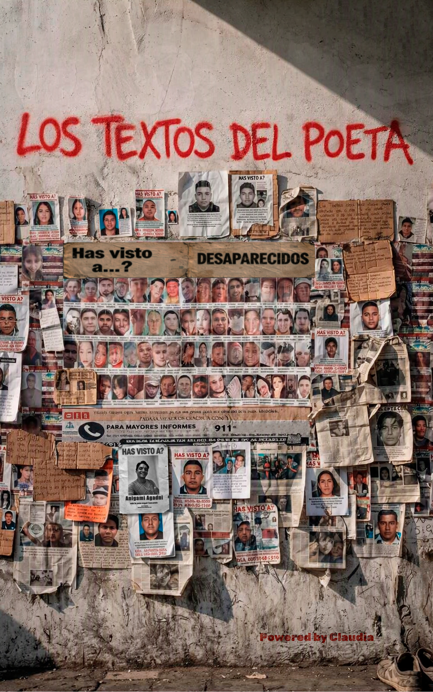

📖LITERATURA / FICCIÓN TESTIMONIAL
Los Textos del Poeta
En las sombras de un call center clandestino de estafas, un narrador retenido bajo amenaza descubre que si escribe rápido y bien, puede esconder sus propios textos entre los guiones de engaño. Una novela visceral sobre la dignidad humana, la trampa migratoria y la redención del talento.